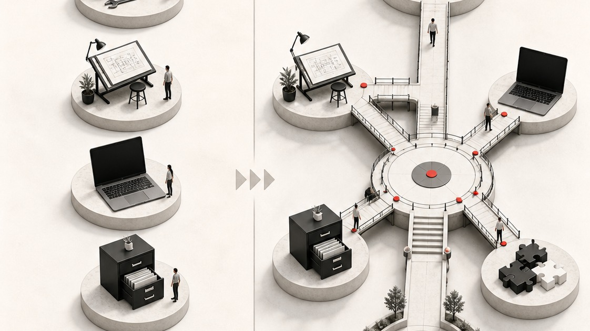
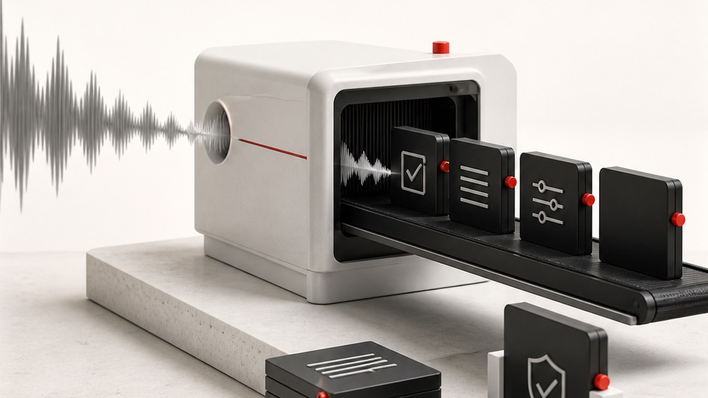
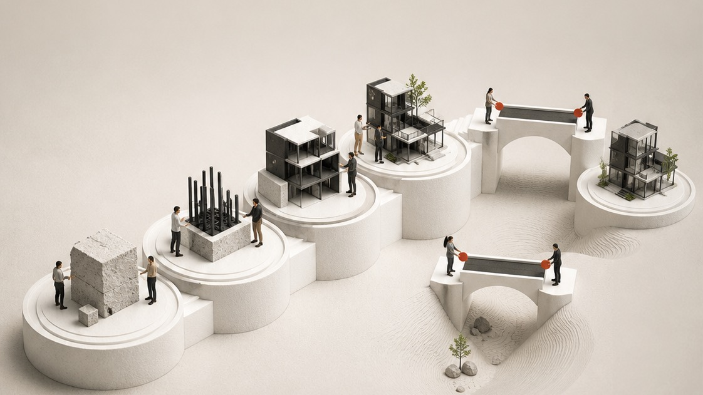

You put the system into everyone else's business. Yours runs out of your head and a Slack thread.
Your words, near the end, when you'd stopped watching demos and said the thing you'd actually come for: somewhere you and Rosie have a depository, where we've got a client and every transcription is there, everything from the sales process, just kind of everything. And then, "it's sort of what HubSpot's supposed to be, but it's not all there."
It isn't there, and I don't think that's a HubSpot failing. HubSpot holds the relationship and holds it well. What you're describing sits a layer above it, and there's nothing on the market to buy for that layer. This is what building it looks like.
What I heard from you
Correct me on any of this before we start.
-
You want the depository, and you named it yourself
Not a folder of files. Something that can answer questions about a client. HubSpot wants to be there and we agreed on the call where it stops: it looks at client relationship data, emails, calls if they're connected. That's the boundary of the product, not a failing of it, and the thing you're describing lives past it. -
You're the transport layer between your own meeting and your own team
Your words: you have the conversation, then you're sending a Slack message, then you're doing a handover, when what should happen is the transcript goes to Rosie and she can go back and ask it anything. Every one of those handovers is you retyping something that already exists in full. -
The generic tools don't sound like you, and you've tested that
On the HubSpot note taker: "it's like, summarise this email. It's like no one needs this email. That's the difference, and it's not in my tone of voice. It's not an email that I would send anyway." That's why AI writing tools get abandoned around week three, and it's the specific thing this is built to fix. -
You're not betting that CRM stays as it is
You wouldn't put money on the category standing still, but you don't know what it turns into. Neither do I, precisely. I do have a view on which part of it is safe to own, and it's further down.
You and Rosie, and the team account you don't have
"Rosie's using Claude as well, and we don't have a team account, but it's like, okay, how can we both get access to the same things?" Three answers, cheapest first. You're on Google Workspace, which makes the first one easier than it would be almost anywhere else.
-
1Costs nothing · works this week
Share a folder
The system lives in a folder on your Mac that syncs to Drive. That whole folder is your private space. You share one sub-folder out of it, transcripts say, and Rosie has everything it files there, in Drive, where she already works. She can't reach the memory, the rules or the instructions. For what you described this afternoon, I think this is most of it. -
2Once you're driving it yourself
Build her a door
A page where she signs in, sees what she's allowed to see, and writes back into it. What she writes passes a check before it becomes part of the record, so she contributes without being able to overwrite anything. A first working version comes together quickly; making it good takes a few rounds. You got to the better answer yourself on the call: push the weekly summary into HubSpot. That's the right instinct, and it's why I think you'll design this join faster than I would. You know what HubSpot can hold and I don't. -
3A later conversation, not this one
Her own build
A separate install with her own brief and her own memory. Two installs diverge immediately, different briefs within a week and different versions of the truth within ten days, so a shared layer has to sit between them and decide who wins. That layer is separate work with its own fee and I'd scope it when you need it rather than guess at it now.
My advice, which costs me money
Run it on yourself first. You'll know inside a fortnight which of the three Rosie actually needs, and in most businesses this size it's the first one. I'd rather sell you one seat that works than two bought on a guess.
Where this sits next to HubSpot

You sell HubSpot implementation for a living, so this matters more to you than it has to anyone else I've written one of these for.
The big platforms aren't going anywhere. Deliverability, infrastructure, compliance and the record itself are hard, and they're theirs. What changes is that you stop opening them. The judgement layer moves up: your Chief of Staff reads from HubSpot and writes back to it inside whatever scopes you grant, and you talk to the thing that holds your context rather than the thing that holds your records.
That makes a well-built HubSpot more valuable, not less, because something is finally using it properly every day instead of a human remembering to. Which is an easier thing for you to say to a client than for me to say to you.
The part that answers your CRM question
The models are rented and the system is owned. It's a folder on your machine, so when Claude changes its terms or something better arrives, you point it at the new one and nothing you've built leaves with the old one. You're not betting on which platform wins. You're making sure the bet doesn't matter.
The honest caveat on connecting it, and you'll know this better than I will
What it can reach inside HubSpot depends on your admin settings and what a private app is allowed to do. I've had builds where a connector went in cleanly and builds where a client's IT policy stopped one dead and we worked around it. I'm not going to promise you a clean connection to the platform you know better than I do. We map yours together in session two rather than assume it.
The two things you'd build first

-
The transcript that walks itself to Rosie
The recording already exists, whether it comes from Gemini or the HubSpot note taker. What's missing is something that reads it as it lands, works out which client it belongs to, files it where Rosie can reach it, pulls out what you committed to on the call, and puts those commitments somewhere that chases them. That's your Slack-message-and-handover loop, gone. -
Proposals in your voice, not the tool's
This document is the demonstration, so I'll be plain rather than claim it. You said "do you create a proposal for Ed?", I dictated about two sentences without even giving it your surname, and you watched one get written while we kept talking, then turn light theme on request. This is the same mechanism run properly over the recording of our hour instead of those two sentences, and it was built while I collected my son, which is what I said would happen.The difference from the note taker isn't the writing. It's that when you change a line, the change is written down as a rule and the next one already has it. Correct a person and it fades. Correct a system and it compounds. That's also what the name-change test was showing you: 470 files and 880 occurrences it could reach, including 267 on the website down to image alt text and legal templates, because it had the context. Your Claude gave you a generic list.
How we do it

Four sessions over about a fortnight, then two follow-ups. Every one is a screen share and you're driving.
-
1About an hour · nothing connected
Install, and teach it Exemplify
I walk you through the install, then it interviews you: what Exemplify does, who you sell to, how you price, your site, how you write. It asks properly and it doesn't take one-word answers. This session is heavier than you'll expect and everything after it rests on what you put in. -
2The connection session
Connect what you choose, then try to break it
HubSpot first, then Gemini and the HubSpot note taker, Slack, Drive and Xero, one credential at a time with the gates set before each goes near anything. Keys never live in the system itself. Then the negative test: we ask for a file and a mailbox it should have no key to and confirm nothing comes back. Everything else in this document is an assurance. A failed break-in is evidence. -
3About 45 minutes
Driving it properly
Which model for which job, how to hand it something big, how to build yourself a small tool when you want one. Most of the speed lives in this session and it's the one people underrate. -
4The one that matters
Your first build, then you lead
We do the transcript pipeline together. Then you build the second thing without me while I stay quiet. That moment is the actual deliverable, not the software. -
+A few weeks apart
We swap what we've built
Two follow-ups, running both ways. You show me what you've made, I show you what I have. With you I expect to come off worse in that trade more often than not, which is the reason I want you using this rather than just selling it.
Whenever you get stuck, you just call me
Through the build and for a month after, without counting it. It's included and it isn't a support tier. The goal I said on the call still stands and it's a strange one for a supplier: I want you not to need me. When something breaks you'll ask your own system before you ask me, and before long it'll know its own setup better than I do.
How updates reach you, since I showed you the version number
It's on 1.7 as of this weekend. When 1.9 lands I send you a short prompt, your system reads what changed, and it judges what's worth folding in against what you've already built yourself. Anything that doesn't fit your setup gets skipped rather than forced. It isn't a reinstall, nothing you've made is overwritten, and it's included. No version treadmill and no upgrade invoice.
And the honest bit about week one
Week one it will not sound like you and it will ask you a lot of questions you find tedious. Week three it sounds like you, and only because of what you did in week one. Everyone hits that dip. I'd rather you hear it now than decide the thing is broken on day four.
The rest of your questions
Nothing to me, and no API credits at all. Claude Code runs on the subscription, not on metered API billing, which is the bit that surprises people. I ran six months on the $100 plan before I started hitting limits, and most of my clients never leave it. Paid to Anthropic, not to Fifth Castle, and I take no cut.
Your own verdict on that was "it's a no brainer", and the arithmetic you didn't have yet is that clients tend to start cancelling other subscriptions once they stop opening them.
Yes, a second seat is another $5,500 plus GST, $6,050 including, because it's bespoke rather than a copy. Two installs diverge immediately, different briefs within a week and different sources of truth by day ten, which you saw the shape of straight away.
But the question underneath that one was whether Rosie is worth a seat, and my answer is not yet. Not because she wouldn't get value, but because you'd be buying it before either of us knows what she actually needs. Run it on yourself, watch what she keeps asking you for, and in a fortnight you'll know whether it's a shared folder, a page she logs into, or a build of her own. Those are three different prices and only one of them is this one.
If it does turn out she needs her own, the shared layer that stops the two of them contradicting each other is separate work with its own fee, and I'd scope it then rather than guess now.
The layer that keeps two of them agreeing with each other is separate work and I've deliberately not put a number on it here. It depends entirely on how much the two roles overlap, and for you and Rosie today I don't think you need it at all.
You said the bank feed takes 24 hours, which is the part I'd have had to tell you. So the honest version: I run on QuickBooks, whose API is limited, and Xero is the more open of the two, which is why you're in the better position. But I haven't built this against Xero on a live client and I'm not going to call it routine when it isn't.
Same answer as HubSpot, for the same reason. We scope it in session two when I can see your setup rather than assume it. What it's good for once it's connected is your own chasing: it stops asking you about a payment that has already landed.
A folder on your Mac, a written brief that is your business in your words, the memory it builds from there, the gates you set, and a licence to run it in Exemplify. No login of mine, no tenancy of mine, nothing of yours on my infrastructure.
What it costs
-
On signing · $3,025 including GST
Half, which locks your session dates and gets you the folder and your homework the same day. -
At go-live · $3,025 including GST
The other half, about four weeks later, which is the split I gave you on the call. -
One cost that isn't mine · about USD $100 a month
Your own Claude plan, in Exemplify's name, on the tier that can do the work rather than just chat. You'll also stop paying for some of the small single-purpose tools once you're not opening them, but I'm not going to put a number on your stack because I haven't seen it.
One seat. Prices are ex GST and GST is added, which is the standard for the business-to-business work we both do.
The one argument for not waiting

You told me you're working out which of your challenges are the biggest priorities right now, which is the right way to decide this and not something I'd argue you out of. So here's the only thing I'd put against waiting a quarter, and then I'll leave it alone.
Three things compound at once. The models get better on their own. HubSpot's own capability gets better on its own. And the layer sitting on top of both gets better because of what you teach it. The first two happen whether you start now or in April. The third only starts when you do. That's the whole argument, and it's why the curve bends rather than climbing in a straight line.
You also said it costs less than a capable VA, which is your number rather than mine. One of my clients is letting his go after years, not because she isn't good, but because there was too much back and forth about what he needed. I'm not suggesting anything about Rosie, who from how you talk about her is doing work this doesn't touch. I'd just expect you to think harder before the next hire or the next agency.
I said this on the call and I said it as though nothing hung off it. One thing does, it was in the note you watched me build, and you should have it from me plainly rather than find it later.
Two weeks or more after the first session, if you tell me what isn't working and why it can't be resolved, and it then can't reasonably be resolved, the second payment is waived. I'm the one who makes that call, in good faith and after a genuine attempt at fixing it. The first payment isn't refundable, and you keep the system and everything you've built in it either way, because by then it's your business written down and it was never mine to take back.
If that reads narrower than what you heard this afternoon, it is. $3,025 is the most this can ever cost you, and I'd rather you argued with me about the wording now than signed around it.
Sign the agreement, pick your first session.
Friday or early next week, as you said. The buttons are here for whenever that lands rather than to hurry you, and if the answer is next quarter that's a fine answer too. Signing takes the first payment and locks your dates, and your homework arrives the same day: where your brand assets live, two or three pieces of writing you'd be happy to be judged on, and the first client whose month you'd want rebuilt end to end.
Grab any slot that suits and I'll extend it to the full hour. If either button plays up, just reply and I'll sort it the same day.
One other thing, deliberately separate
You mentioned video, next quarter or the one after. That's the other half of what I do and it has nothing to do with this, so it stays out of this document rather than getting bundled in to make the number look better. Raise it when the timing's right and we'll treat it properly.
Same for the partnership. It's in the note you watched being written, and I said on the call that the commercials don't exist yet because I haven't found the right partner. That's still true, and your seven businesses whose HubSpot you've already sorted out are exactly why I'd rather do it properly than quickly. I'd want you to have lived in this for a month before we agree how it splits.
And thank you for Tony Sambell. I spoke to him the day before we talked and I haven't put this in front of him, so you were reading it right. What he's running is team project work, and this sits at a different layer, so I'll take that introduction when you're ready to make it.
Ed, you spend your working life telling founders that the system in their head isn't a system. You were the speaker of the night on that sort of subject last week. And then, like nearly everyone who does that job, you go back to a business held together by your own memory and a Slack thread.
You watched it work, you asked the questions I'd want asked, and you said you'd be keen to give it a go and see. You also said you'd read this and come back Friday or early next week. Do that. Nothing here expires and I'm not going to chase you on Thursday.
Matt reckoned we'd get along before we'd even met. He wasn't wrong, and that's the reason this document argues with itself in a few places instead of selling to you.